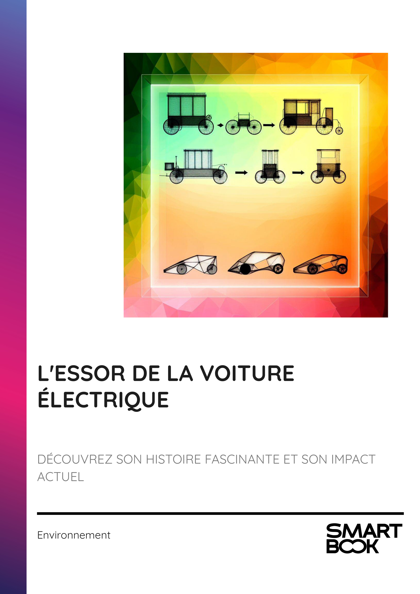

- INTRODUCTION - L'ÉVOLUTION FASCINANTE DE LA MOBILITÉ ÉLECTRIQUE
- Chapitre 1 - LES ORIGINES DE LA VOITURE ÉLECTRIQUE
- Chapitre 2 - L'ÂGE D'OR DES VOITURES ÉLECTRIQUES
- Chapitre 3 - LE DÉCLIN FACE AUX MOTEURS À COMBUSTION
- Chapitre 4 - LE RENOUVEAU DES VOITURES ÉLECTRIQUES AU XXIE SIÈCLE
- Chapitre 5 - LES AVANCÉES TECHNOLOGIQUES DES VÉHICULES ÉLECTRIQUES
- Chapitre 6 - LES POLITIQUES PUBLIQUES ET L'ÉLECTROMOBILITÉ
- Chapitre 7 - L'IMPACT ENVIRONNEMENTAL DES VOITURES ÉLECTRIQUES
- Chapitre 8 - AVENIR ET PERSPECTIVES DE LA VOITURE ÉLECTRIQUE
- CONCLUSION - VERS UN AVENIR ÉLECTRISANT
📄 Consulter les annexes du livre
Mentions légales